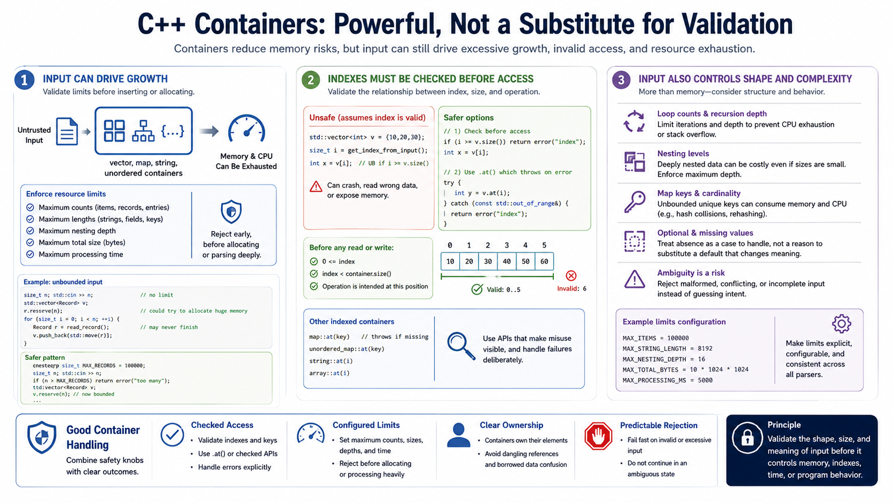

Containers, Indexes, and Resource Limits
Connecting to LMS... Progress: in progress

Narration
C++ containers reduce many memory management risks, but they do not remove the need for validation. A vector, map, string, or unordered container can grow based on input. If the program accepts an unbounded count, length, or number of records, it may allocate large amounts of memory or spend excessive CPU time processing data that should have been rejected early. Resource limits are part of input validation, not an afterthought.
Indexes must be checked before access. An unchecked operator on a vector or string assumes the index is valid. Bounds-checked access concepts, such as using APIs that report errors or throw on invalid access, can make mistakes more visible, but they still require the program to decide how to handle failure. The important rule is to validate the relationship between the index, the container size, and the intended operation before reading or writing.
Input can also control loop counts, recursion depth, nesting levels, map keys, optional fields, and missing values. A parser that accepts deeply nested data or millions of small records can fail even without memory corruption. Treat absence as a case to handle deliberately, not as a reason to use a default that changes security meaning. Good container handling combines checked access, configured limits, clear ownership, and predictable rejection when input would cause excessive memory growth, CPU use, or ambiguous state.